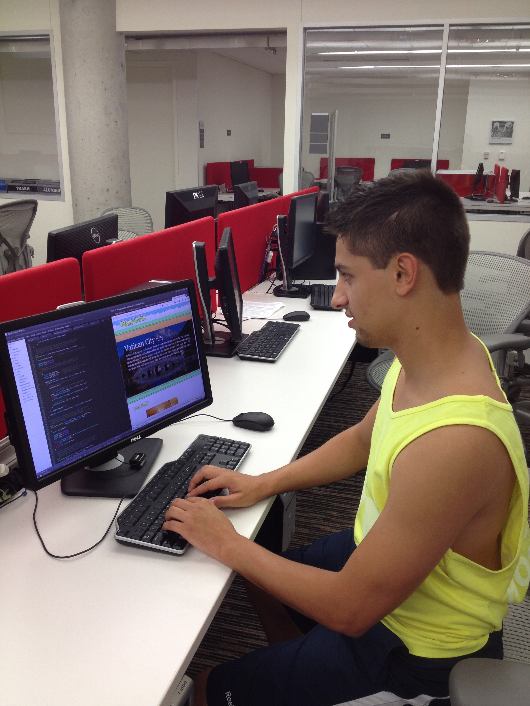

Jose Coello Phase II Team Leader
Computer science major. I love to play video games and expect to graduate in this coming fall. Interested in application development and databases.
Phase I: I helped create the 3 static pages using Twitter Bootstrap, mostly focused on making the index page, by adding the navigation bar, and using the Google Map api.
Phase II: I was the group leader. I organized the team into two groups, one focused on inputting data into the database. I was in the other group creating the api and fixing the views using Django.
Phase III: to be filled.
